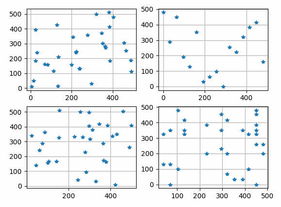

pyailib.base package¶
Submodules¶
pyailib.base.arrayops module¶
- pyailib.base.arrayops.arraycomb(arrays, out=None)¶
compute the elemnts combination of several lists.
- Parameters
arrays (list or numpy array) – The lists or arrays.
out (numpy array, optional) – The combination results (defaults is
None).
- Returns
The combination results.
- Return type
numpy array
Examples:
Compute the combination of three lists: \([1,2,3]\), \([4, 5]\), \([6,7]\), this will produce a \(12\times 3\) array.
x = arraycomb(([1, 2, 3], [4, 5], [6, 7])) print(x, x.shape) # output: [[1 4 6] [1 4 7] [1 5 6] [1 5 7] [2 4 6] [2 4 7] [2 5 6] [2 5 7] [3 4 6] [3 4 7] [3 5 6] [3 5 7]] (12, 3)
- pyailib.base.arrayops.cat(arrays, axis=None, out=None)¶
- pyailib.base.arrayops.cut(x, pos, axis=None)¶
Cut array at given position.
Cut array at given position.
- pyailib.base.arrayops.sl(dims, axis, idx=None)¶
slice any axis
generates slice of specified axis.
- Parameters
- Returns
slice for specified axis elements.
- Return type
tuple of slice
Examples
import numpy as np np.random.seed(2020) X = np.random.randint(0, 100, (9, 10)) print(X, 'X) print(X[sl(2, -1, [0, 1])], 'Xsl') # output: [[96 8 67 67 91 3 71 56 29 48] [32 24 74 9 51 11 55 62 67 69] [48 28 20 8 38 84 65 1 79 69] [74 73 62 21 29 90 6 38 22 63] [21 68 6 98 3 20 55 1 52 9] [83 82 65 42 66 55 33 80 82 72] [94 91 14 14 75 5 38 83 99 10] [80 64 79 30 84 22 46 26 60 13] [24 63 25 89 9 69 47 89 55 75]] X [[96 8] [32 24] [48 28] [74 73] [21 68] [83 82] [94 91] [80 64] [24 63]] Xsl
pyailib.base.baseops module¶
- pyailib.base.baseops.dmka(D, Ds)¶
Multi-key value assign
Multi-key value assign
- pyailib.base.baseops.dreplace(d, fv=None, rv='None', new=False)¶
pyailib.base.mathops module¶
- pyailib.base.mathops.c2r(X, caxis=- 1)¶
convert complex-valued array to real-valued array
- Parameters
X (numpy array) – complex-valued array
caxis (int, optional) – complex axis for real-valued array. Defaults to -1.
- Returns
real-valued array
- Return type
numpy array
Examples
import numpy as np np.random.seed(2020) Xreal = np.random.randint(0, 30, (3, 2, 4)) Xcplx = r2c(Xreal, caxis=1) Yreal = c2r(Xcplx, caxis=0, keepdim=True) print(Xreal, Xreal.shape, 'Xreal') print(Xcplx, Xcplx.shape, 'Xcplx') print(Yreal, Yreal.shape, 'Yreal') print(np.sum(Yreal[0] - Xcplx.real), np.sum(Yreal[1] - Xcplx.imag), 'Error') # output [[[ 0 8 3 22] [ 3 27 29 3]] [[ 7 24 29 16] [ 0 24 10 9]] [[19 11 23 18] [ 3 6 5 16]]] (3, 2, 4) Xreal [[[ 0. +3.j 8.+27.j 3.+29.j 22. +3.j]] [[ 7. +0.j 24.+24.j 29.+10.j 16. +9.j]] [[19. +3.j 11. +6.j 23. +5.j 18.+16.j]]] (3, 1, 4) Xcplx [[[[ 0. 8. 3. 22.]] [[ 7. 24. 29. 16.]] [[19. 11. 23. 18.]]] [[[ 3. 27. 29. 3.]] [[ 0. 24. 10. 9.]] [[ 3. 6. 5. 16.]]]] (2, 3, 1, 4) Yreal 0.0 0.0, Error
- pyailib.base.mathops.ebeo(a, b, op='+')¶
element by element operation
Element by element operation.
- Parameters
op (str, optional) – Supported operations are: -
'+'or'add'for addition (default) -'-'or'sub'for substraction -'*'or'mul'for multiplication -'/'or'div'for division -'**'orpowfor power -'<', or'lt'for less than -'<=', or'le'for less than or equal to -'>', or'gt'for greater than -'>=', or'ge'for greater than or equal to -'&'for bitwise and -'|'for bitwise or -'^'for bitwise xor - function for custom operation.
- Raises
TypeError – If the specified operator not in the above list, raise a TypeError.
- pyailib.base.mathops.nextpow2(x)¶
get the next higher power of 2.
Given an number \(x\), returns the first p such that \(2^p >=|x|\).
Examples
print(prevpow2(-5), nextpow2(-5)) print(prevpow2(5), nextpow2(5)) print(prevpow2(0.3), nextpow2(0.3)) print(prevpow2(7.3), nextpow2(7.3)) print(prevpow2(-3.5), nextpow2(-3.5)) # output 2 3 2 3 -2 -1 2 3 1 2
- pyailib.base.mathops.prevpow2(x)¶
get the previous lower power of 2.
Given an number \(x\), returns the first p such that \(2^p <=|x|\).
Examples
print(prevpow2(-5), nextpow2(-5)) print(prevpow2(5), nextpow2(5)) print(prevpow2(0.3), nextpow2(0.3)) print(prevpow2(7.3), nextpow2(7.3)) print(prevpow2(-3.5), nextpow2(-3.5)) # output 2 3 2 3 -2 -1 2 3 1 2
- pyailib.base.mathops.r2c(X, caxis=- 1, keepdim=False)¶
convert real-valued array to complex-valued array
Convert real-valued array (the size of
axis-th dimension is 2) to complex-valued array- Parameters
- Returns
complex-valued array
- Return type
numpy array
Examples
import numpy as np np.random.seed(2020) Xreal = np.random.randint(0, 30, (3, 2, 4)) Xcplx = r2c(Xreal, caxis=1) Yreal = c2r(Xcplx, caxis=0, keepdim=True) print(Xreal, Xreal.shape, 'Xreal') print(Xcplx, Xcplx.shape, 'Xcplx') print(Yreal, Yreal.shape, 'Yreal') print(np.sum(Yreal[0] - Xcplx.real), np.sum(Yreal[1] - Xcplx.imag), 'Error') # output [[[ 0 8 3 22] [ 3 27 29 3]] [[ 7 24 29 16] [ 0 24 10 9]] [[19 11 23 18] [ 3 6 5 16]]] (3, 2, 4) Xreal [[[ 0. +3.j 8.+27.j 3.+29.j 22. +3.j]] [[ 7. +0.j 24.+24.j 29.+10.j 16. +9.j]] [[19. +3.j 11. +6.j 23. +5.j 18.+16.j]]] (3, 1, 4) Xcplx [[[[ 0. 8. 3. 22.]] [[ 7. 24. 29. 16.]] [[19. 11. 23. 18.]]] [[[ 3. 27. 29. 3.]] [[ 0. 24. 10. 9.]] [[ 3. 6. 5. 16.]]]] (2, 3, 1, 4) Yreal 0.0 0.0, Error
pyailib.base.randomfunc module¶
- pyailib.base.randomfunc.randgrid(start, stop, step, shake=0, n=None)¶
generates non-repeated uniform stepped random integers
Generates
nnon-repeated random integers fromstarttostopwith step sizestep.When step is 1 and shake is 0, it works similar to randperm,
- Parameters
- Returns
- Return type
for multi-dimension, return a list of lists, for 1-dimension, return a list of numbers.
see
randperm().Example
Plot sampled randperm and randgrid point.
The results shown in the above figure can be obtained by the following codes.
import matplotlib.pyplot as plt setseed(2021) print(randperm(2, 40, 8), ", randperm(2, 40, 8)") print(randgrid(2, 40, 1, -1., 8), ", randgrid(2, 40, 1, 8, -1.)") print(randgrid(2, 40, 6, -1, 8), ", randgrid(2, 40, 6, 8)") print(randgrid(2, 40, 6, 0.5, 8), ", randgrid(2, 40, 6, 8, 0.5)") print(randgrid(2, 40, 6, -1, 12), ", randgrid(2, 40, 6, 12)") print(randgrid(2, 40, 6, 0.5, 12), ", randgrid(2, 40, 6, 12, 0.5)") mask = np.zeros((5, 6)) mask[3, 4] = 0 mask[2, 5] = 0 Rh, Rw = randperm2d(5, 6, 4, mask=mask) print(Rh) print(Rw) N, H, W = 32, 512, 512 y1 = pl.randperm(0, H, N) x1 = pl.randperm(0, W, N) print(len(y1), len(x1)) y2 = pl.randgrid(0, H, 32, 0., N) x2 = pl.randgrid(0, W, 32, 0., N) print(len(y2), len(x2)) print(y2, x2) y3, x3 = pl.randperm([0, 0], [H, W], N) print(len(y3), len(x3)) y4, x4 = pl.randgrid([0, 0], [H, W], [32, 32], [0.25, 0.25], N) print(len(y4), len(x4)) plt.figure() plt.subplot(221) plt.grid() plt.plot(x1, y1, '*') plt.subplot(222) plt.grid() plt.plot(x2, y2, '*') plt.subplot(223) plt.grid() plt.plot(x3, y3, '*') plt.subplot(224) plt.grid() plt.plot(x4, y4, '*') plt.show()
{kind=link}
- pyailib.base.randomfunc.randperm(start, stop, n)¶
randperm function like matlab
genarates diffrent random interges in range [start, stop)
- Parameters
- Returns
P (list) – the randomly permuted intergers.
see
randgrid(),randperm2d().
- pyailib.base.randomfunc.randperm2d(H, W, number, population=None, mask=None)¶
randperm 2d function
genarates diffrent random interges in range [start, end)
- Parameters
- Returns
Ph (list) – the randomly permuted intergers in height direction.
Pw (list) – the randomly permuted intergers in width direction.
see
randgrid(),randperm().